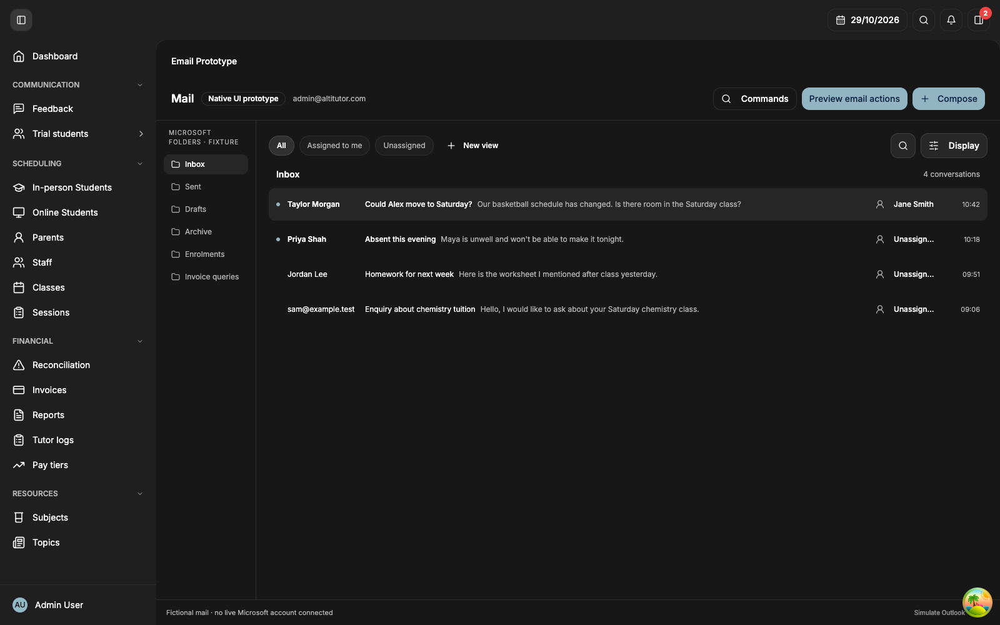
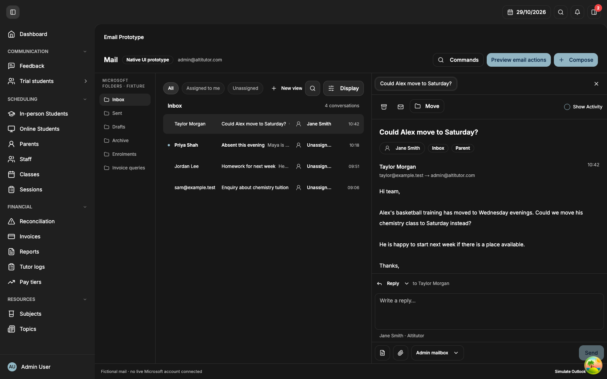
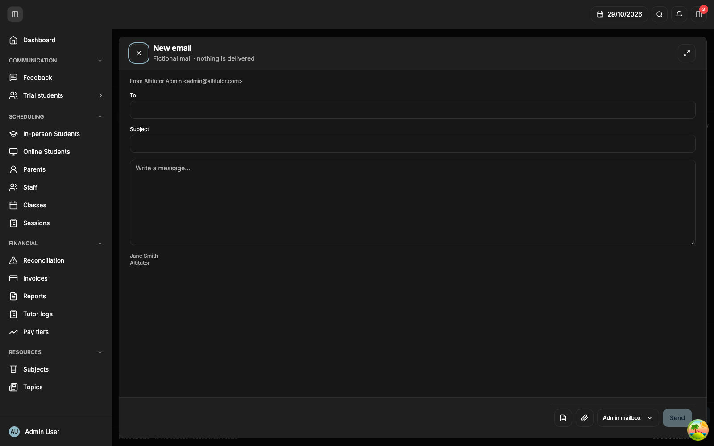
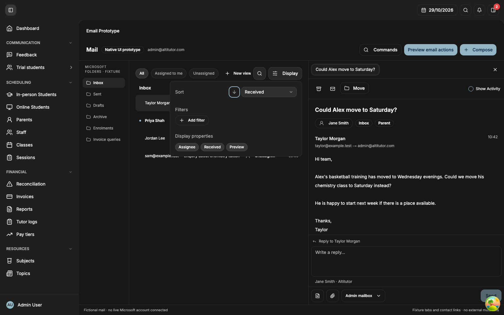
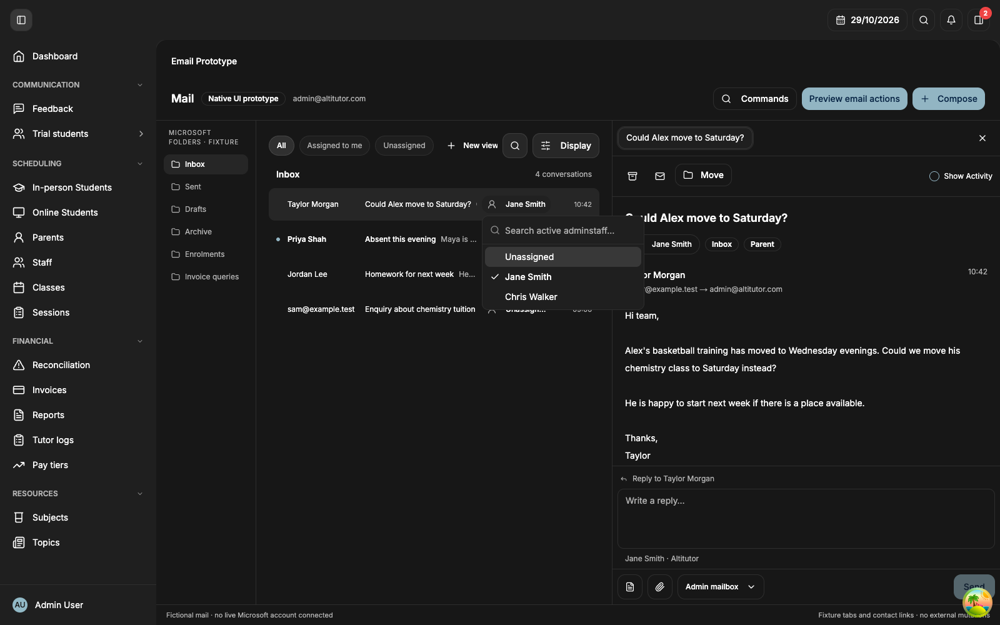

Mail, using the admin-web UI.
The approved workflow now has a native-component prototype. These are inspected screenshots from the actual authenticated admin app, with fictional mail. Click a screenshot to enlarge.
Inbox and native views
Rounded bg-muted selection, inline muted previews, assignee column, existing saved views and Display toolbar.

Thread in a right tab
SegmentedControl thread tabs, top assignee pill, optional Activity and a Messages-style composer footer.

AdminDialogShell composer
The existing admin dialog owns close/expand/layout behavior; templates, attachments and sender sit left, Send sits right.

Existing Display control
These are the real shared toolbar components, with All, Assigned to me and Unassigned built-in views.

Searchable inline assignment
The list column and thread pill share native SearchableSelect behavior. This screen uses fictional active adminstaff.

Existing email features are part of this delivery
The onboarding/trial importer, inbox review and manual sync controls will be replaced by the common email workflow. Preserve explicit journey links, enquiry/link/ignore actions, communication history and registration-send evidence. Remove the old five-minute onboarding cron at the verified cutover; do not add a second onboarding scheduler.
Canonical operational content and eligibility stay with their domains. Identity/security mail and UCAT campaigns remain separately owned. Microsoft owns folder names and moves; existing Outlook-created folders appear here.
Prototype and implementation boundary
Shared toolbar, Display views, searchable selects, segmented controls, AdminDialogShell and PaletteBrowser are actual repo components. Thread tabs, contact navigation, mail, Activity and moves are in-memory fixtures in this prototype. The existing global command palette opens normally; email-specific production registration and native accessory-kind integration are implementation work.
No live Graph account or real email delivery. The native app remains host-local; this portable board contains screenshots. The existing Lavish host/process must remain available. Local-only page: http://127.0.0.1:56484/email-prototype?native=1